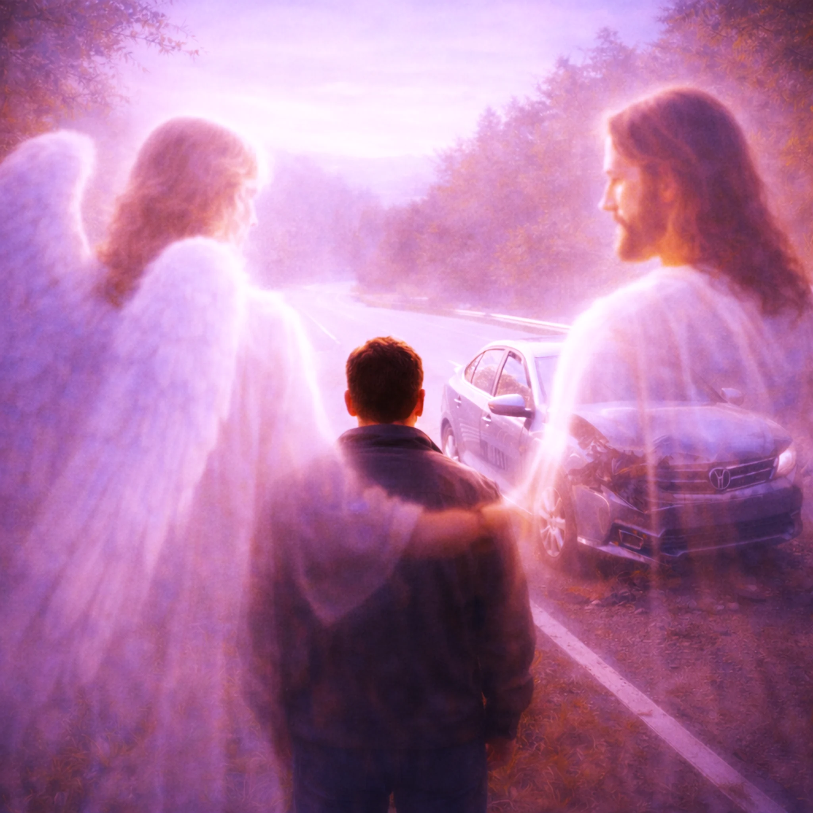

You Are Loved

Want to download this song? Return to the Songs page, add this song to your playlist, then open My Playlist. Select the song and choose Download Song to review the Free Use agreement.
Lyrics
Verse 1
Have you ever wondered or felt
Something you couldn’t explain
At times feeling stopped or held
Someone there…now and again?
Chorus
You were loved and protected
Every bit of day-to-day
You never knew how that affected
The life you live today.
Verse 2
That is Love. It’s been there all along
Since before the day you were born
Protected by one, invisible and strong
Loved by One whose light transforms.
Chorus
You were loved and protected
Every bit of day-to-day
You never knew how that affected
The life you live today.
Bridge
Remember that almost car crash,
The time you should have fallen but no
You got really sick but survived
Devastated... the memory forgotten.
Chorus
You were loved and protected
Every bit of day-to-day
You never knew how that affected
The life you live today.
Final Verse
Imagine a protector always there for you
Just think about the wonder of that
And one loving you, not judging you?
How could anyone love like that?
Chorus
You were loved and protected
Every bit of day-to-day
You never knew how that affected
The life you live today.
Chorus
You were loved and protected
Every bit of day-to-day
You never knew how that affected
The life you live today.
Outro
You are still loved to this day
Devotional
You Are Loved
“Yea, I have loved thee with an everlasting love: therefore with lovingkindness have I drawn thee.” — Jeremiah 31:3 (KJV)
There are moments we remember because something almost happened. A car stopped just in time. A fall was narrowly avoided. An illness that might have taken us did not. We look back and wonder whether the Lord was caring for us in ways we could not see. Sometimes we also remember what was not prevented: the loss, the diagnosis, the grief that changed our lives. Both kinds of memories belong in an honest conversation about God’s care.
The song, You Are Loved, gently invites us to consider a love that preceded our awareness of it. The Bible tells us that God knew us before we knew Him. Psalm 139:13–16 describes His intimate knowledge of our formation, and Jeremiah 31:3 speaks of His “everlasting love.” We need not manufacture a remarkable escape or explain every event in order to receive that assurance.
The song’s refrain speaks of being loved and protected through ordinary days. Scripture gives us reason to thank God for His providential care. Psalm 121:7–8 declares, “The LORD shall preserve thy going out and thy coming in from this time forth, and even for evermore.” Yet the same Bible tells of faithful people who suffered, became ill, and died. God’s protection is not a promise that every accident will be avoided or every sickness cured. We cannot know, from an outcome alone, why one person was spared and another was not.
What, then, can we say with confidence? We can say that suffering does not prove God has stopped loving us. Romans 8:35 asks, “Who shall separate us from the love of Christ?” and verses 38–39 answer that neither death nor life, nor anything else in creation, can separate those who are in Christ Jesus from God’s love. That promise reaches beyond the good days, beyond what we can explain, and even beyond death.
The bridge recalls an almost-accident, a near fall, and a serious illness. Those memories can stir gratitude. They can also stir questions. When we cannot interpret God’s purposes, we may still bring Him both our thanks and our sorrow. The Lord does not require us to pretend that pain was painless. Psalm 34:18 says, “The LORD is nigh unto them that are of a broken heart.” His nearness is precious precisely when the road is hard.
The final verse wonders about a love that does not simply condemn. Scripture speaks with care here. God is holy and does judge sin; His love is not indifference to what is wrong. But John 3:16–17 reveals the astonishing mercy of His purpose in sending His Son, and Romans 5:8 says, “while we were yet sinners, Christ died for us.” The fullest assurance of His love is not a fortunate escape. It is Jesus Christ, who gave Himself to reconcile sinners to God.
So when the song ends with “You are still loved to this day,” let that line turn our eyes toward the unchanging character of God and the invitation of His grace. We may not be able to explain every rescue, every sorrow, or every unanswered prayer. But we can look to Christ, trust what Scripture says of Him, and know that His love is not exhausted by the difficulties of this life.
Prayer
Heavenly Father, thank You for Your care in ways I have seen and in ways I will never know. When I remember narrow escapes, teach me gratitude without presumption. When I remember suffering, meet me with Your comfort and truth. Keep me from measuring Your love by the ease of my circumstances. Lead me to the surest expression of Your love, Jesus Christ, and help me rest in Your faithfulness today. In His name, Amen.
Extra Info — Scripture Map
Known and formed by God: Psalm 139:13–18; Jeremiah 1:5
God’s enduring love: Jeremiah 31:3; Psalm 136:1–26
God’s care and providence: Psalm 121:1–8; Matthew 10:29–31
Suffering does not cancel His love: Romans 8:31–39; 2 Corinthians 4:8–18
The Lord near the brokenhearted: Psalm 34:17–19; Psalm 46:1
God’s love revealed in Christ: John 3:16–17; Romans 5:6–8; 1 John 4:9–10
Grace, judgment, and salvation: John 3:18–21; Ephesians 2:4–10
Hope beyond suffering: Revelation 21:3–5; 1 Peter 1:3–5